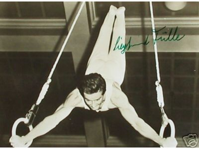

Siegfried Fulle (GDR)
4-Time GDR AA Champion
1964 and 1968 Olympic Team Bronze Medalist

Medal Total
Olympic Games: 2
Bronze
World Championships: 1 Bronze
Siegfried was born on October 6, 1939, in Greiz and trained at DHfK Leipzig. After retiring, he became a coach. Fulle's most famous pupil was Klaus Koste, the 1972 Olympic vault champion. In March 1991 Fulle became the head trainer for the men's Bundesliga team at FC Bayern Munchen. His wife, Ursula Trensinger, was also a gymnast; she competed at the 1966 world championships. Their daughter, Britta, was also a gymnast.
Competition Results
1957
Leipzig Gymnastics and Sports Meet for Youth: 1st AA (Class I)
Werner Seelenbinder Memorial for Youth: 1st AA
1958
GDR Championships (Class I): 2nd AA
1959
GDR Championships: 5th AA, 1st HB, 2nd FX, 2nd R, 2nd V
GDR-FRA Dual Meet: 1st Team, 7th AA
1960
GDR Championships: 1st AA, 1st R, 2nd FX, 5th V, 5th PB
Olympic Games: 7th Team, 28th AA
POL-GDR Dual Meet: 2nd Team, 1st AA
1961
European Championships: 38th AA
GDR Championships: 1st AA, 2nd V, 3rd FX, 3rd PH, 3rd PB, 4th R, 4th HB
1962
CSSR-GDR-UKR: 3rd Team, 14th AA
GDR Championships: 3rd AA, 1st R, 2nd V, 2nd HB, 4th FX, 5th PH
GDR-CSSR Dual Meet: 2nd Team, 2nd AA
GDR-UAR Dual Meet: 1st Team, 2nd AA
World Championships: 8th Team, 23rd AA, 6th V
1963
European Championships: 7th AA, 6th FX, 6th PB
GDR Championships: 1st AA, 1st R, 1st PB, 1st HB, 2nd FX, 2nd V
GDR-CSSR Dual Meet: 2nd Team, 6th AA
GDR-POL Dual Meet: 2nd Team, 1st AA
1964
GDR-CSSR Dual Meet: 2nd Team, 1st AA
GDR-POL Dual Meet: 1st Team, 1st AA
GDR-ROM Dual Meet: 1st Team, 1st AA
GDR-USSR Dual Meet: 2nd Team, 5th AA
GDR-YUG Dual Meet: 1st Team, 1st AA
Olympic Games: 3rd Team, 15th AA
1965
GDR Championships: 3rd AA, 2nd V, 2nd R, 2nd HB, 4th FX, 5th PH
POL-GDR Dual Meet: 2nd Team, 7th AA
1966
GDR Championships: 6th AA, 1st FX, 1st R, 2nd V, 6th PH
GDR-POL Dual Meet: 2nd Team, 2nd AA
GDR-ROM Dual Meet: 1st Team, 3rd AA
GDR-USSR Dual Meet: 2nd Team, 1st AA
RSFSR-GDR Dual Meet: 2nd Team, 6th AA
World Championships: 3rd Team, 23rd AA
1967
GDR Championships: 1st AA, 1st HB, 2nd FX, 2nd R, 2nd V, 3rd PH, 5th
PB
GDR-CSSR Dual Meet: 1st Team, 1st AA
GDR-ROM Dual Meet: 1st Team, 3rd AA
GDR-USSR-POL: 3rd Team, 10th AA
SWE-GDR Dual Meet: 1st Team, 3rd AA
1968
GDR Championships: 4th AA, 1st V, 4th FX, 4th HB, 5th R, 5th PB
GDR-CSSR Dual Meet: 1st Team, 5th AA
GDR-USSR Dual Meet: 2nd Team, 5th AA
Olympic Games: 3rd Team, 21st AA
This page was created on November
06, 2005 and was last updated on September 28, 2013.
© Gymn Forum